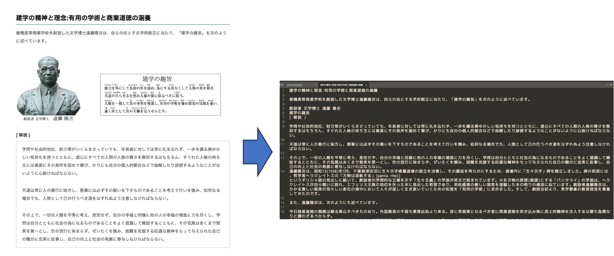

トークン化と形態素解析
自然言語処理にも様々な手法がありますが, 基本的には元の文章データをそのまま使うことはなく, 文章を適切な単位に分割するなどの前処理を施します. これをトークン化といい, 代表的な手法としては単語分割, 文字分割, サブワード分割などがあります.
単語分割に関して元の文章が英語などの単語ごとに区切られている文章であれば
"This is a pen" → "This","is","a","pen"
という風に簡単に分割できますが, 日本語のように単語間に空白などがない言語では特別な処理が必要になります.
また, 英語であっても, 代名詞 'This', 動詞 is, 冠詞 "a", 名詞 "pen" のように各単語の品詞を識別する (品詞タグ付け) には特別な処理が必要になります.
このような処理のために, 文章を意味を持つ最小の言語単位 (形態素) に分割し, それぞれの品詞を識別する処理を形態素解析 (Morphological Analysis) といいます.
形態素解析の基本的な手順は以下のようになります.
データの作成
PDF やホームページなどから直接処理することも可能ですが, .txt や .csv, .xml などの構造化データに変換しておくと処理が楽になります.
入力例文: "太陽が昇る東の空が美しい"
テキストの前処理
不要なスペースや記号を除去しテキストを処理しやすい形に整理します.
形態素への分割
文章を形態素と呼ばれる最小単位に分割します.
"太陽","が","昇る","東","の","空","が","美しい"
品詞のタグ付け
分割された形態素に品詞情報を付与します.
"太陽": 名詞
"が": 助詞
"昇る": 動詞
"東": 名詞
"の": 助詞
"空": 名詞
"が": 助詞
"美しい": 形容詞
日本語の形態素解析用の Python パッケージとして有名なものには, MeCab や Janome があります.
MeCab- 日本語のオープンソース形態素解析システム
- Python のライブラリとしては mecab-python3
janome- Python で書かれた日本語形態素解析器
- MeCab より Python からのインストールが簡単
- ただし, 遅いので大規模な処理ではあまり使われない
形態素解析の例では, ライブラリとして MeCab を利用します. 次のコマンドでインストールしておきましょう (unidic-lite は形態素解析用の日本語の辞書です).
uv add mecab-python3 unidic-lite形態素解析の練習用のデータとして千葉商科大学の HP に掲載されている理念を利用してみます. テキスト部分をコピーして, UTF-8 の cuc.txt ファイルを作成し, data フォルダに保存しましょう.

まずは, テキストデータを読み込んでみます. pandas などを利用して読み込むこともできますが, ここでは Python の組み込み関数 open() でファイルを開き, read() で読み込み, close() でファイルを閉じます.
# ファイルを開く
f = open('data/cuc.txt', encoding='utf-8')
# ファイルを読み込む
raw = f.read()
# ファイルを閉じる
f.close()
print(raw)
"""
建学の精神と理念:有用の学術と商業道徳の涵養
巣鴨高等商業学校を創設した文学博士遠藤隆吉は、自らの志とする学府創立に当たり、「建学の趣旨」を次のように述べています。
創設者 文学博士 遠藤 隆吉
...
"""pandas などではこれらの手順を一度にまとめて行ってくれていましたが, この方法で行う場合は close() を利用してファイルを閉じることを忘れないようにしましょう. 忘れた場合, システムのリソースが無駄に占有され, 他のプログラムやソフトがファイルにアクセスできなくなるなどの問題が生じる可能性があります. 今回はファイルを読み込むだけですが, 間に適用される処理が多くなるほど, open() と close() の間の対応関係が分かりづらくなります.
そこでこのように手動で close() を呼ぶ代わりに, Python では with 文を使うことで, インデントブロックを抜けたときに自動的にファイルを閉じられます. with 文を使うとコードが簡潔になり, 閉じ忘れも防げるので, 一般には with 文の使用が推奨されます.
with open('data/cuc.txt', encoding='utf-8') as f:
raw = f.read()
print(raw)続いて形態素解析の前の前処理を行います. (以下の形態素解析のコードなどは神戸学院大学 林坂ゼミの資料を参考にしました.)
前処理として, テキストファイルの改行やタブなどを削除する関数を用意します.
文字列を正規表現で操作するための標準ライブラリ re を import する必要があるので注意してください.
import re #正規表現操作のための標準ライブラリ
def strip_CRLF_from_Text(text):
"""テキストファイルの改行,タブを削除し,形態素解析を実行
改行前後が日本語文字の場合は改行を削除する．
それ以外はスペースに置換する．
"""
# 改行前後の文字が日本語文字の場合は改行を削除する
plaintext = re.sub('([ぁ-んー]+|[ァ-ンー]+|[\\u4e00-\\u9FFF]+|[ぁ-んァ-ンー\\u4e00-\\u9FFF]+)(\n)([ぁ-んー]+|[ァ-ンー]+|[\\u4e00-\\u9FFF]+|[ぁ-んァ-ンー\\u4e00-\\u9FFF]+)',
r'\1\3',
text)
# 残った改行とタブ記号はスペースに置換する
plaintext = plaintext.replace('\n', ' ').replace('\t', ' ')
return plaintext
text = strip_CRLF_from_Text(raw)
print(text)
"""
建学の精神と理念:有用の学術と商業道徳の涵養 巣鴨高等商業学校を創設した文学博士遠藤隆吉は...
"""改行やタブが消えて, 文毎にスペースで区切られた文章が作成されました. 日本語の文章の途中で改行がある場合には, 改行前後を結合して 1 文としてまとめられていることを確認しましょう.
続いて, 前処理を施した文章を, MeCab で形態素解析してみます.
抽出する品詞は word_types に [String] で指定します.
import MeCab as mc
def mecab_wakati(text,word_types = ["名詞","動詞","形容詞","副詞"]):
#分かち書き
t = mc.Tagger()
#word_types = [String]で指定 ("名詞","動詞","形容詞","副詞")
node = t.parseToNode(text)
sent = ""
noun = [x for x in word_types if x == "名詞"]
others = [x for x in word_types if x in [ "動詞", "形容詞","副詞"]]
while(node):
if node.surface != "": # ヘッダとフッタを除外
word_type = node.feature.split(",")[0]
if word_type in noun:
sent += node.surface + " " # node.surface は「表層形」
if word_type in others:
sent += node.feature.split(",")[10] + " " # node.feature.split(",")[10] は unidic の「書字形基本形」(活用する前の形, 例: 当たり → 当たる)
node = node.next
if node is None:
break
return sent
sent = mecab_wakati(text)
print(sent)
"""
建学 精神 理念 有用 学術 商業 道徳 涵養 巣鴨 商業 学校 創設 する 文学 博士 遠藤 隆吉 自ら 志 する 学府 創立 当たる...
"""
#動詞だけ抽出
sent = mecab_wakati(text,['動詞'])
print('-'*10 + '\n', sent)
"""
する する 当たる 述べる いる まさる いる 対する 忘れる 譲る 持つ...
"""以上で文章の形態素解析は完了です.